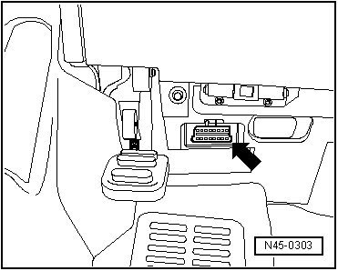

VAS 5051, Connecting
VAS 5051, Connecting
Special tools, testers and auxiliary items required
• Vehicle diagnosis, testing and information system (VAS 5051)
CAUTION!
• Test equipment must always be secured on the rear seat during a road test.
• These devices may only be operated by a passenger during a test drive.
- Plug the connector of diagnostic cable (VAS 5051/1) or (VAS 5051/3) into the vehicle diagnostic connector.

- Switch on tester - arrow -.

Tester is ready for operation when you can select between fields/buttons Guided Functions and Guided Fault Finding at right of display.
Depending on equipment and tester version, additional functions may be displayed, for example:
• Elsa
• Measuring technique
• On Board Diagnosis (OBD)
Tester is not ready for operation.
- Switch on ignition.
- Touch a field/button on the display to start desired function.